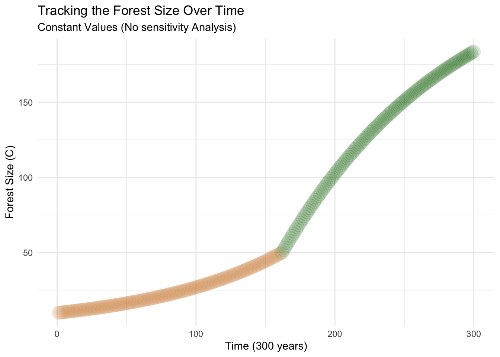
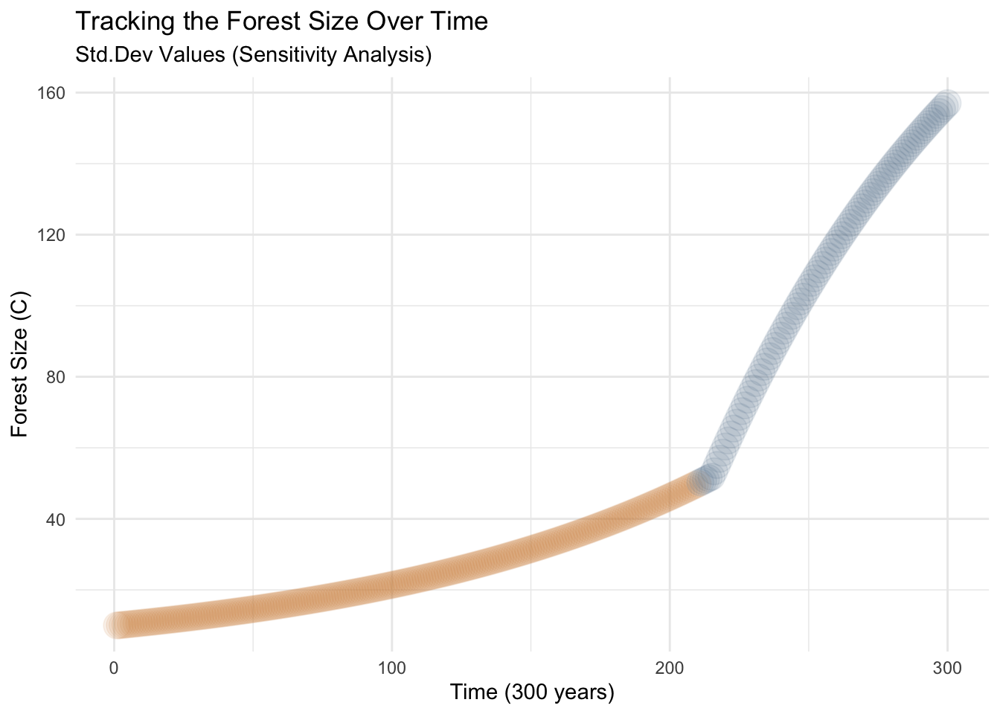
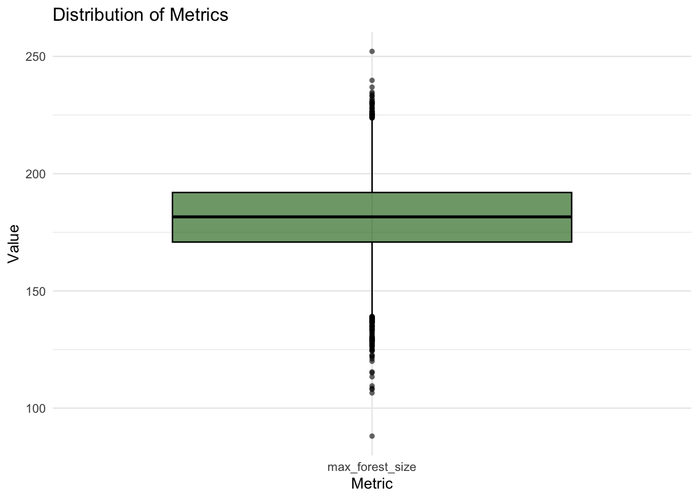

Sensitivity Analysis of Forest Carbon Sequestration
By conducting a sensitivity analysis, the goal is to identify the most significant factors, quantify their impact, and gain precise insights into the dynamics of forest carbon sequestration.
Carbon sequestration in forests is the process by which trees and vegetation absorb carbon dioxide (CO2) from the atmosphere and store it in the form of carbon (C) within their biomass (AGB) and soils (BGB). Forests play a vital role in mitigating climate change as they act as natural carbon sinks, helping to reduce the concentration of CO2, a greenhouse gas, in the atmosphere.
In this post, we will perform a sensitivity analysis to calculate the total carbon sequestration in forests, considering their complex and dynamic nature. Forests are influenced by factors such as tree species, age, soil quality, and climate conditions, which affect carbon sequestration rates and capacity. By conducting sensitivity analysis, we will examine how changes in these factors impact carbon sequestration estimates. Keeping the Ordinary Differential Equations (ODE) simple in this post will demonstrate the effectiveness of this statistical analysis. It will enable us to identify the most influential factors, quantify their effects, and gain precise insights into forest carbon sequestration.
Carrying Capacity (K) and Carbon Sequestration: In the context of carbon sequestration, the carrying capacity (K) represents the maximum level of carbon that a forest ecosystem can store sustainable over the long term. It is determined by factors such as available land area, tree growth rates, nutrient availability, and ecosystem resilience. The carrying capacity sets an upper limit on the amount of carbon that can be sequestered by a forest, beyond which further increases may be unsustainable or lead to ecosystem degradation. Understanding the carrying capacity is crucial for forest managers and policymakers as it helps in setting realistic targets for carbon sequestration, guiding reforestation efforts, and ensuring the long-term effectiveness of forest-based climate change mitigation strategies.
The Model (ODE)
Consider the following models of forest growth
Forests where C is below a threshold canopy closure.
\[{\frac{C}{dt}} = r \cdot C\]
where:
\({C}\) = forest size measured in units of carbon (C))
\({dt}\) = time increment (change in time.)
\({r}\) = early exponential growth rate of the forest
For forests where C is at or above the threshold canopy closure
\[{\frac{dC}{dt}} = g \cdot (1 - {\frac{C}{K}})\]
where:
\({\frac{dC}{dt}}\) = rate of change of \({C}\) (Forest size) with respect to time
\({g}\) = linear growth rate of the forest
\({K}\) = carrying capacity in units of carbon of the forest
You could think of the canopy closure threshold as the size of the forest at which growth rates change from exponential to linear You can think of , as early exponential growth rate and as the linear growth rate once canopy closure has been reached. Now lets start with the assignment.
Read in the libraries
1. Implement this model in R (as a differential equation). This functions are stored as R scripts in a folder within the working directory.
Code
#' Forest growth condition#' @param time - Time since start#' @param C - Forest size measured in units of carbon#' @param r - Exponential growth rate before before canopy closure#' @param g - Linear growth rate after canopy closure (kg/year)#' @param K - Carrying capacity in units of carbon of the forest#' @param parms - as list with two values, r, g, K#' @return derivative of forest size with timeequation_forestgrowth <-function(time, C, parms) {if(C <= parms$thres) { growth = parms$r * C } else { growth = parms$g * (1- C/parms$K) }return(list(growth))}
2. Run the model for 300 years (using the ODE solver) starting with an initial forest size of 10 kg/C, and using the following parameters: In this case the parameters will be constant.
thresh = canopy closure threshold of 50 kg C
K = 250 kg C (carrying capacity): On average, it is estimated to range from 200 to 400 kg C per square meter (kg C/m²) of forest area.
r = 0.01 (exponential growth rate before before canopy closure)
g = 2 kg/year (linear growth rate after canopy closure)
Code
# Set the carbon sequestration starting pointC <-10K =250r =0.01g <-2thresh <-50#Now lets use our equation with this fixed valuesyears =seq(from=1, to=300)parms =list(r = r, K = K,g = g,thresh = thresh)result_fixed =ode(y = C,times = years,func = equation_forestgrowth,parms = parms)head(result_fixed,10)
Graph the results. Here you are graphing the trajectory with the parameters as given (e.g no uncertainty)
Code
colnames(result_fixed) =c("year","C")# turn it into a data frameresult_fixed =as.data.frame(result_fixed)ggplot(result_fixed, aes(year, C)) +geom_point(color =ifelse(result_fixed$C <50, "peru", "darkgreen"), size =6, alpha =0.1) +labs(title ="Tracking the Forest Size Over Time",subtitle ="Constant Values (No sensitivity Analysis)",y ="Forest Size (C)",x ="Time (300 years)") +theme_minimal()

In the graph above, we can clearly see the threshold being crossed at a Forest Size of 50. To enhance the visual representation, I have incorporated a color change after the year 162, as its when it surpasses the carrying capacity. It is important to note that this graph utilizes fixed parameter values, and no sensitivity analysis has been conducted yet.
3. Run a sobol global (vary all parameters at the same time) sensitivity analysis that explores how the estimated maximum forest size (e.g maximum of 300 years, varies with these parameters:
- pre canopy closure growth rate ( )
- post-canopy closure growth rate ( )
- canopy closure threshold and carrying capacity( )
- Assume that parameters are all normally distributed with means as given above and standard deviation of 10% of mean value.
Code
set.seed(39)# Set the list of possible parametersnumber_parameters <-2000K <-rnorm(mean =250, sd =25, n = number_parameters) # Set a variance of SD 1r <-rnorm(mean =0.01, sd =0.001, n = number_parameters)g <-rnorm(mean =2, sd =0.2, n = number_parameters) # Linear growth rate after canopy closure (kg/year)thresh <-rnorm(mean =50, sd =5, n = number_parameters)possibility1_df <-cbind.data.frame(r=r, K=K, g=g, thresh = thresh)K <-rnorm(mean =250, sd =25, n = number_parameters) # Set a variance of SD 1r <-rnorm(mean =0.01, sd =0.001, n = number_parameters)g <-rnorm(mean =2, sd =0.2, n = number_parameters) # Linear growth rate after canopy closure (kg/year)thresh <-rnorm(mean =50, sd =5, n = number_parameters)possibility2_df <-cbind.data.frame(r=r, K=K, g=g, thresh = thresh)# fix any negative values and they are not meaningfulX1 <- possibility1_df %>%map_df(pmax, 0.0)X2 <- possibility2_df %>%map_df(pmax, 0.0)# create our sobol object and get sets of parameters for running the modelsens_C <-sobolSalt(model =NULL, X1, X2, nboot =300)# our parameter sets arehead(sens_C$X)
# lets add names colnames(sens_C$X) =c("r","K", "g", "thresh")#This code is to do an example of the randomize numbers in the effect of the graph above.parms_2 <-list(r =as.data.frame(sens_C$X)$r[1],K =as.data.frame(sens_C$X)$K[1],g =as.data.frame(sens_C$X)$g[1],thresh =as.data.frame(sens_C$X)$thresh[1])result_2 <-ode(y = C,times = years,func = equation_forestgrowth,parms = parms_2)colnames(result_2) =c("year","C")head(result_2)
year C
[1,] 1 10.00000
[2,] 2 10.07719
[3,] 3 10.15498
[4,] 4 10.23336
[5,] 5 10.31236
[6,] 6 10.39196
Code
# turn it into a data frameresult_2 <-as.data.frame(result_2)ggplot(result_2, aes(year, C)) +geom_point(color =ifelse(result_2$C <50, "peru", "skyblue4"),size =6,alpha =0.1) +labs(title ="Tracking the Forest Size Over Time",subtitle ="Std.Dev Values (Sensitivity Analysis)",y ="Forest Size (C)",x ="Time (300 years)") +theme_minimal()

In the graph above shows that the carrying capacity is reached later in time compared to the previous example. This change is reflected by a color variation in the graph. Specifically, in this case (which is random), the carrying capacity is reached after the 211 year of forest growth. In contrast, in the previous graph with fixed values, the carrying capacity was reached at the 162nd year. It is important to note that this graph (blue) utilizes the first values in the our sensitivity analysis table created above.
Now, lets create two additional functions that will help us
A function that computes the metrics we want
A function that runs our ODE solver and computes the metrics (I call it a wrapper function as it is really just a workflow/wrapper to call ode solver and then compute metrics)
Code
# turn computing our metrics into a functioncompute_metrics =function(result) { max_forest_size =max(result$C)return(list(max_forest_size = max_forest_size))}compute_metrics(result_fixed)
$max_forest_size
[1] 183.7213
Now we need to apply the ode and this function for all of our parameters
Code
# Define a wrapper function # Lets make the threshold 90% of carrying capacity. #This function will run the ODE for each parametercarbon_wrapper <-function(K,r, g, thresh, C, years, func) { parms =list(K=K, r=r, g=g, thresh=thresh) result =ode(y = C,times = years,func = func,parms = parms)colnames(result) =c("Year", "C")# get metrics metrics =compute_metrics(as.data.frame(result))return(metrics)}
Code
# now use pmap as we did beforeallresults <-as.data.frame(sens_C$X) %>%pmap(carbon_wrapper, C = C, years = years, func = equation_forestgrowth)# extract out results from pmap into a data frameallres <- allresults %>%map_dfr(`[`, c("max_forest_size"))# create boxplotstmp = allres %>%pivot_longer(cols =everything(), names_to ="metric", values_to ="value")
4. Graph the results of the sensitivity analysis as a box plot of maximum forest size and record the two Sobol indices (S and T).
Code
# Create the plotggplot(tmp, aes(metric, value, fill = metric)) +geom_boxplot(fill ="darkgreen",color ="black", alpha =0.6, outlier.color ="black", outlier.shape =16) +labs(title ="Distribution of Metrics",y ="Value",x ="Metric") +theme_minimal()

The graph illustrates the distribution of different forest growth models. On average, the forest size is projected to reach 181.3 C, with a range between 95.2 and 237.4 C. This box plot represents the results of the sensitivity analysis conducted on 2000 random scenarios, providing valuable insights into the factors influencing forest growth.
Compute the sobol indicies for each metric
Code
# sobol can only handle one output at a time - so we will need to do them separatelysen_C = sensitivity::tell(sens_C, allres$max_forest_size)# example of the sen_C$S[1:3,]
In summary, the numbers in the output represent the sensitivity indices,
original: This column represents the original sensitivity indices calculated using the Sobol method. It quantifies the main effect of each input variable on the output variable of interest. A higher value indicates a stronger influence of that particular input variable on the output.
bias: The bias column represents the discrepancy between the original sensitivity indices and the estimated values. It measures the deviation or error in the sensitivity index estimation. Positive values indicate an overestimation, while negative values indicate an underestimation.
std. error: This column indicates the standard error associated with each sensitivity index estimation. It provides a measure of uncertainty or variability in the sensitivity index calculation. Smaller standard error values indicate more precise estimates.
min. c.i. & max. c.i.: The confidence interval are a range of values that shows how certain we are about the estimated sensitivity index. A narrower interval means we have a more precise estimate, while a wider interval indicates more uncertainty and less precision in determining the true sensitivity index.
Interpretation in words: In the example of X1, the original sensitivity index for X1 is 0.352 indicating that X1 has a significant main effect on the output variable. The bias for X1 is -0.0004489. This value represents the difference between the original sensitivity index and the estimated value. In this case, the estimated value is slightly lower than the original sensitivity index. The standard error associated with the sensitivity index estimation for X1 is 0.02246737. This value represents the uncertainty or variability in the estimation. A smaller standard error suggests a more precise estimate. The minimum confidence interval for the sensitivity index of X1 is 0.3074961. It provides a lower bound estimate for the sensitivity index. The maximum confidence interval for the sensitivity index of X1 is 0.3912342. It provides an upper bound estimate for the sensitivity index.
5. In 2-3 sentences, discuss what the results of your simulation might mean. (For example think about how what parameters climate change might influence).
Climate change has a significant impact on forests, as they are sensitive to weather conditions and changes in water availability due to higher temperatures. This can result in slower forest growth before reaching full canopy coverage, as water scarcity and decreased soil nutrients impede plant growth. Sensitivity analysis is a valuable method for understanding the initial equations of forest growth, and by creating a randomized sensitivity table, we can observe the potential effects on final forest growth. On average, for this post we can see that the maximum forest size in terms of carbon (C) units is approximately 180, showing a significant increase after reaching canopy closure, but with a flattened growth rate over time as we can see in the first plots.
Citation
BibTeX citation:
@online{patrón2023,
author = {Patrón, Javier},
title = {Sensitivity {Analysis} of {Forest} {Carbon} {Sequestration}},
date = {2023-05-12},
url = {https://github.com/javipatron},
langid = {en}
}
For attribution, please cite this work as:
Patrón, Javier. 2023. “Sensitivity Analysis of Forest Carbon
Sequestration.” May 12, 2023. https://github.com/javipatron.